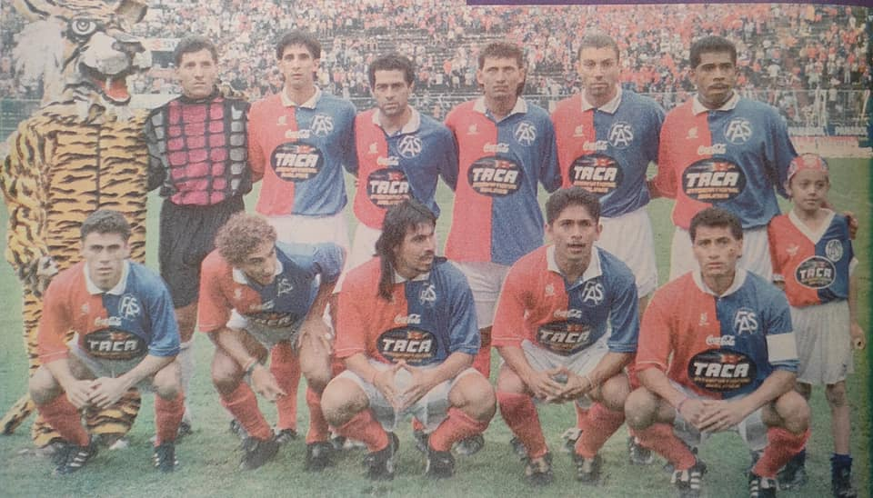
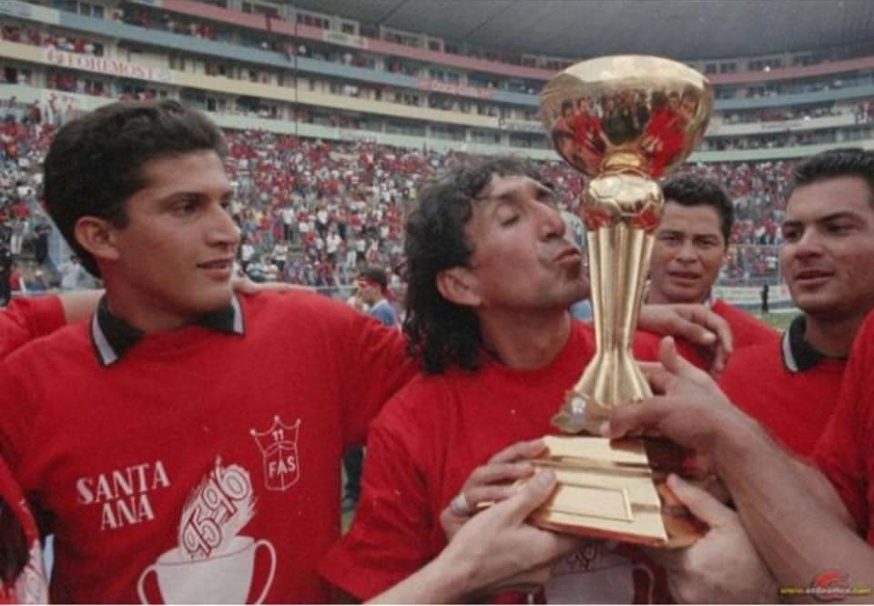
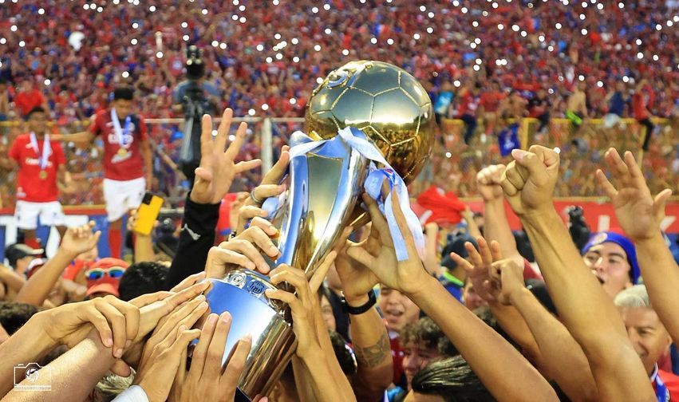

Cabe en Santa Ana el honor de haber sido escenario del primer partido de fútbol que se jugó en El Salvador, sucedido en el año de 1899 y desde esa lejana época se vislumbraba que esta ciudad seria grande en el deporte y que con el tiempo se convertiría en toda una potencia futbolística a nivel nacional.
Con el paso de los años surgió entre un puñado de hombres visionarios, emprendedores y fomentadores del deporte la idea de crear un equipo que representara dignamente a toda Santa Ana y empezaron a reunirse y a planificar, la formación del conjunto balompédico que defendería los colores de Santa Ana
Provino de Necaxa, jugó una temporada en el Fasito, luego lo compró Monterrey de México.
nuestro querido Jorge "Mágico" González es introducido en el salón de la fama del fútbol. Orgullo FASista
El más grande ya lo saben... Jorge Magico Gonzales... el más loco el más fino jugador... 🎶

Un saludo muy especial a toda la afición del equipo Santaneco y que puedan disfrutar el campeonato número 19 en la historia del Club. - Somos AGM Sport Inc.
Todos lo culparon y humillaron, por los amaños y si tienen razón, vendió su país, y decepciono a la aficion, pero ahora todos: Descansa en paz...
Listos para disputar una final mas, con toda la actitud, y la fe puesta en Dios.